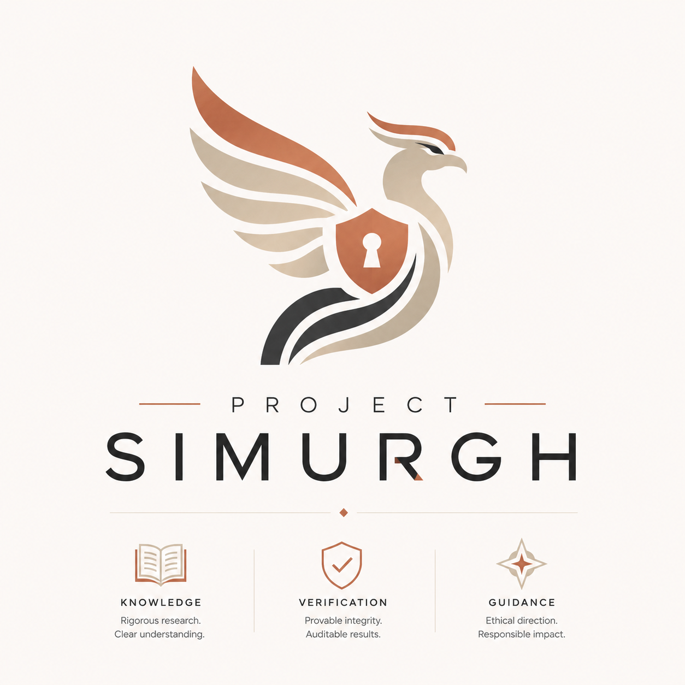

Project Simurgh · Technical Brief
Verifiable Containment Attestation After Guardrail Failure
A receipt for what an AI deployment did, one a third party can verify offline and a dishonest operator cannot fake.
The measurement gap in agent security
Capability evaluations show what a frontier model can do. They do not show what a deployed system allowed it to do after the model was connected to tools, files, context, and external systems. Agent-security policy discussions now circle that operational question: when a guardrail fails, what happened next?
Most defences optimise the first line: stopping the bad input. Simurgh assumes that line will sometimes fail and produces signed, offline-reproducible evidence of the consequences. It is a receipt, not a passport.
What Simurgh proves
After a guardrail, router, or agent boundary is stressed: did untrusted context gain authority, did an unauthorised tool fire, was unsafe output exported? Each run is sealed into an Ed25519-signed, metadata-only evidence pack that re-derives byte-for-byte offline.
The verifier is producer-independent. It trusts only the signer's public key and runs with no network, so an outside reviewer can confirm a real containment claim and falsify a dishonest one. The threat model is a dishonest producer: an operator who wants to look contained. That offline-falsifiable stance is the core difference from receipt-only logging.
An example rung: Stage 4Q — verifiable friction receipts
The ladder now runs to Stage 5L (v2.47.0) — a machine-checkable
proof that the evaluation scope was committed before review, anchored
in a real Bitcoin block (957 689) and stress-tested by a live Claude Sonnet-5
adversary that could not break it. Stage 4Q below is one earlier rung, kept because it
reproduces cleanly.
The same signed-evidence spine now attests agent oversight, not just
containment. Stage 4Q (v2.26.0-stage-4q-vfr) produces a signed,
epoch-bound, ordered proof that an
approval-gate friction checkpoint preceded a protected authority crossing
(tool execution, unsafe export, privilege expansion, consent broadening, or disclosure
escalation). Enforcement is a two-key pincer: the crossing must embed
the approval’s digest, the approval must appear earlier in the recorded run chain,
and it must be signed by a key
distinct from the tool/harness signer — so a dishonest operator
cannot backdate approval, launder run order, or self-approve.
Its completeness closure, No Silent Exemption, is the sharp part. An operator may leave a crossing unbound only by embedding a signed, policy-falsifiable exemption — a receipt of absence — which policy judges against an affirmative allowlist that is empty (refuse) by default. Even absence leaves a signed feather in the ledger. The stage ships a 15-case corpus, a 10-arm live approval-gated capture over a genuinely separate approver process (with a human-at-terminal ceremony arm), JS↔Python byte-parity, and five machine-checked Lean theorems. A reviewer can be their own approver and confirm the evidence is decision-equivalent. Scope is honest and signed: recorded-run order, not physical time; a key ceremony and process separation, not proof a human deliberated; enforcement evidence, not proof that friction prevented harm.
Headline result: real, live Llama Guard 4
A real Llama Guard 4 12B
(meta-llama/Llama-Guard-4-12B, input-only, 8-bit, greedy) was captured once
on GPU over a 180-case run-set, then frozen, hash-bound, and signed. The model is
never re-executed in CI; reviewers replay the frozen capture.
| Llama Guard 4 allowed / blocked | 168 / 12 |
| Malicious cases (of 150) Llama Guard 4 missed | 138 |
| Missed malicious cases contained by Simurgh | 138 / 138 |
| External-guardrail-plus-Simurgh targeted attack-success rate | 0 / 150 |
| Unsafe tool execution / output export / context escalation | 0 / 0 / 0 |
| Capture determinism | 3 greedy runs |
The 138 misses split cleanly. 120 were downstream-injection cases an input-only classifier structurally cannot see, because the attack lives in untrusted context, tool calls, or provider output. Simurgh contained those cases at its context, tool, and output boundaries. The other 18 were direct-input attacks Llama Guard 4 saw and allowed anyway; it caught 12 of 30 direct inputs. Simurgh contained those at the input boundary. Both paths produced zero successful attacks. This is a boundary claim about where each defence acts, not a ranking of Llama Guard 4.
Live-agent containment
The same evidence spine was driven against a live agent, not just a classifier. A self-hosted Llama-3.3-70B model ran the AgentDojo workspace suite: 10 user tasks x 14 injection goals = 140 attack cases, scored against an attack taxonomy pre-registered and frozen before results.
Simurgh's authority gate, covering egress and destructive mutation, cut targeted attack-success rate from 9/140 to 0/140. It contained every baseline success, including the destructive-delete class an egress-only gate leaves open. The benign utility held, with one borderline regression reported as likely run-to-run nondeterminism. Containment is claimed only within the declared taxonomy; non-destructive mutation, financial actions, and code actions remain named future work.
Recomputable evaluation
- v2.15.0 publishes a containment-utility Pareto frontier that re-derives offline from signed packs alone.
- Invalid or under-counted evidence is structurally excluded from the frontier, never silently accepted.
- v2.17.0 adds an adaptive four-class red-team campaign over the evidence layer.
Attacking the proof
- Eight attack classes hit the attestation core: tamper, key-swap, metadata swap, laundering, collision, replay, self-mutation, and policy drift.
- The cryptographic trust root held. Two detector-semantics issues became frozen detector-v2 fixtures and passed a second red-team round.
Independent roots and witness checks
A second provenance root signs the release verdict with GitHub's OIDC identity, not the developer's key. The two roots corroborate by digest equality, never nested signatures, and the runner recomputes its verdict from real command exit codes. A one-byte divergence fails closed before signing.
Because a valid signature proves only who signed, a producer-independent witness checks each signed receipt against canary sightings at the real export and tool sinks. A gateway that signs a clean receipt for a run that leaked is caught: its Ed25519 signature still verifies, but the witness raises a conflict. Across the fixtures, the witness produced zero false accusations and zero missed lies.
Reproduce it yourself: one offline command
The release ladder is 12 signed rungs, externally replayable by a reviewer with no prior context, fully offline after dependency install:
git clone https://github.com/Raoof128/Project-Simurgh.git
cd Project-Simurgh && npm ci
scripts/reproduce-vca-chain.sh # public VCA ladder
scripts/reproduce-llm-shield-stage4h.sh # proof-carrying containment checker
scripts/reproduce-llm-shield-stage4q.sh # verifiable friction receipts (Node >= 26)The first command replays the public VCA ladder. The Stage 4H command replays the proof-carrying containment checker. The Stage 4Q command runs all ten friction gates — unit suites, JS↔Python parity, both fixture lanes with byte-idempotency, offline attestation verification, be-your-own-approver decision-equivalence, privacy scan, key audits, and the K7 all-functions net. Each replay refuses the fake-clean story. All 12 Stage 3X rungs are tag-and-commit pinned; 10/12 are evidence-root chain-checked; 5 current-format manifests are deep per-file re-walked under hardened containment rules; 3/12 fully reproduce; and 2/12 are index-only with signed reasons. It does not claim a uniform 12/12; the receipt records what each rung did and did not prove.
What this is not
- Not a jailbreak detector, and not a claim of jailbreak immunity or general jailbreak resistance.
- Not a model-level guardrail or a replacement for one; it is complementary, post-filter.
- Not a model-inference-integrity proof; completeness holds only for gateway-mediated actions.
- Signed evidence is reproducible, not ground truth; a live capture's origin is self-reported and signed as such.
- Stage 4Q proves recorded-run oversight order, not physical time; a cryptographic key ceremony and process separation, not proof that a human deliberated or that friction prevented harm.
- Not validated on production traffic, not production-ready, and it ranks no vendor as unsafe.
- Stage 4H is deterministic offline checker reproduction over signed evidence; it is not kernel sandboxing, execution truth, implicit-flow security, deployment safety, or a future-run guarantee.
- Live Claude Computer Use remains a documented next step, not a completed demo.